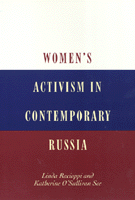

<body bgcolor="#FFFFFF" text="#000000" link="#0000FF" vlink="#CC0000" alink="#CC0000"><center><hr width="350" size="1" align="center" noshade>A penetrating look at the experiences of women activists and their organizations in Russia since perestroika<hr width="350" size="1" align="center" noshade><p><a href="https://cdcshoppingcart.uchicago.edu/Cart/ChicagoBook.aspx?ISBN=9781566395205&&PRESS=temple" target="_top">Buy this book!</a> | <a href="https://cdcshoppingcart.uchicago.edu/Cart/Cart.aspx?PRESS=temple" target="_top">View Cart</a> | <a href="https://cdcshoppingcart.uchicago.edu/Cart/Cart.aspx?PRESS=temple" target="_top">Check Out</a></p><p></p></center><!--none//--><h1>Women's Activism in Contemporary Russia</h1>
<h3>Linda Racioppi and Katherine O'Sullivan See</h3>
<P>cloth 1-56639-520-8 $84.50, Jun 97, <FONT COLOR=#990033>Available</FONT>
<br>paper 1-56639-521-6 $35.95, Jun 97, <FONT COLOR=#990033>Available</FONT>
<br>Electronic Book 1-43990-883-4 $34.95 <FONT COLOR=#990033>Available</FONT>
<BR> 277 pp
5.5x8.25
</P><p>Through in-depth interviews with activists, the authors provide a broad and thorough introduction to the emerging women's movement and women's organizations in Russia. The focus is on the development of women's activism in late Soviet and post-Soviet Russia and the challenges for activists in a time of resurgent nationalism and turmoil over democratic reform.
<p>Linda Racioppi and Katherine O'Sullivan See present a concise history of women's situation in tsarist and Soviet Russia, which shows how their ability to organize was constrained by social strictures and state policies. They also analyze how the state-sponsored Soviet Women's Committee and new groups like the Independent Women's Forum, the Women's League, and the International Institute for Entrepreneurial Development responded to the challenges and opportunities of the transition. The authors examine the dynamics among these groups as well. The personal life histories of the activists reflect the ways women have responded to the changing political, economic, and social landscape in the former Soviet Union.
<BR>&nbsp;<h2>Reviews</h2>
<p><i>"For the student of social movements in general and women's movements in particular, the value of this book is in the diversity of groups and activists studied and the richness of detail. The variety of activists, ideologies, and organizational origins is striking.... Racioppi and O'Sullivan See have provided an important introduction to the study of Russian women's activism in the reform and post-communist periods, and anyone hoping to develop a more theoretical account would do well to start with this book."</i>
<br>&#151<b><i>Mobilization</i></b>
<p><i>"Linda Racioppi and Katherine O'Sullivan See have given us a model book on contemporary activism.... this is an ideal book for students in courses on post-communism or contemporary Russia&#151or for anyone with an interest in these topics."</i>
<br>&#151<b><i><a href="http://www.findarticles.com/p/articles/mi_m0348/is_3_40/ai_55449382" target="new">Labor History</a></i></b>
<BR>&nbsp;<h2>Contents</h2><P>
<p>Preface
<p>1. Introduction
<p>2. Women‘s Activism in Historical Context
<br><I>Tsarist Autocracy and Constraints on Women’s Activism &#149
The Soviet Order &#149
Elvira Novikova</I>
<p>3. Three Women and the Transition
<br><I>Economic and Political Transformations &#149
Women and the Economy &#149
Women and Political Voice &#149
Organizing Women as Politics &#149
Alternative “Emancipations” &#149
Natalia Belokopytova &#149
The State and Ideological Emancipation</I>
<p>4. The Union of Women of Russia and Alevtina Fedulova
<br><I>The Soviet Women’s Committee &#149
The Committee and the Transition &#149
Alevtina Fedulova</I>
<p>5. The Zhensovety and Ol’ga Bessolova
<br><I>Zhensovety &#149
Ol’ga Bessolova</I>
<p>6. The Center for Gender Studies, the Independent
<br><I>Women’s Forum, and Anastasia Posadskaya &#149
The Center for Gender Studies &#149
Anastasia Posadskaya</I>
<p>7. The Women’s League, Gaia, and Elena Ershova
<br><I>The Women’s League &#149
Gaia &#149
Elena Ershova</I>
<p>8. Business and Economic Development Organizations
<br><I>The Transition and Economic Organizing &#149
Conversion and Women and Eleanora Ivanova &#149
The Association of Small Towns and Tatiana Tsertsvadze &#149
The International Institute for Entrepreneurial Development and Leah Lerner &#149
Economic Organizations and the Women’s Movement</I>
<p>9. Interpreting Russian Women’s Activism
<br><I>Activists’ Lives in Historical Context &#149
Analyzing the Women‘s Movement</I>
<p>Appendix A Registered Women’s Organizations in Russia
<br>Appendix B Open Letter to American Women Issued on Behalf of the Congress of Soviet Women, July 1993
<br>Notes
<br>Interviews with Portrayed Activists
<br>Works Cited
<br>Index
</P><BR>&nbsp;<H2>About the Author(s)</H2>
<P><B>Linda Racioppi</B> teaches at James Madison College, Michigan State University. Racioppi is the author of <i>Soviet Policy towards South Asia since 1970, </i></P>
<P><B>Katherine O'Sullivan See</B> teaches at James Madison College, Michigan State University. See is the author of <i>First World Nationalisms: Class and Ethnic Politics in Northern Ireland and Quebec.</i></P>
<BR><H2>Subject Categories</H2>
<p><A HREF="/tempress/women.html" TARGET="_top">Women's Studies</a>
<BR>
<BR><A HREF="/tempress/political.html" TARGET="_top">Political Science and Public Policy</a>
</p>
<p align="center"><a href="https://cdcshoppingcart.uchicago.edu/Cart/ChicagoBook.aspx?ISBN=9781566395205&&PRESS=temple" target="_top">Buy this book!</a> | <a href="https://cdcshoppingcart.uchicago.edu/Cart/Cart.aspx?PRESS=temple" target="_top">View Cart</a> | <a href="https://cdcshoppingcart.uchicago.edu/Cart/Cart.aspx?PRESS=temple" target="_top">Check Out</a></p><p><font face="Arial" size="1"><a href="copyright.html" onMouseOver="window.status='Web Copyright Policy';return true;" onMouseOut="window.status=''" title="Web Copyright Policy">&copy;</a> 2015 <a href="http://www.temple.edu" target="new" onMouseOver="window.status='Link to Temple University home page';return true;" onMouseOut="window.status=''" title="Link to Temple University home page">Temple University</a>. All Rights Reserved. http://www.temple.edu/tempress/titles/1326_reg.html</font></p>